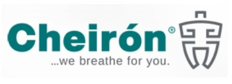
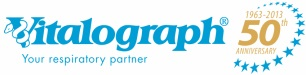
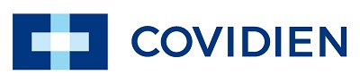
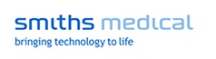
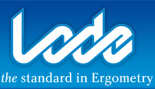

Na področju prodaje, vzdrževanja in svetovanja si prizadevamo ohraniti krog zadovoljnih uporabnikov z visoko kakovostjo proizvodov in storitev. Kakovost proizvodov zagotavljamo s preverjenimi dobavitelji.
Zastopamo pomembna svetovna podjetja s področja medicine, z nekaterimi pa sodelujemo celo že od vsega začetka (Vitalograph, Radiometer, Philips-Respironics). Z dobavitelji si prizadevamo razvijati in ohranjati dobre poslovne odnose, saj so ključnega pomena pri zagotavljanju kakovostne medicinske opreme in storitev (tehnična in strokovna podpora).
Zastopamo






